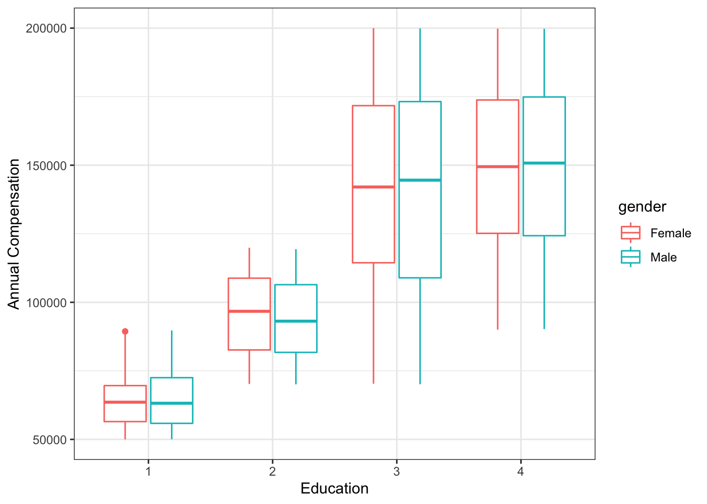

7 Univariate & Bivariate Analysis
This chapter reviews essential univariate and bivariate analysis concepts that underpin the more complex multivariate approaches in subsequent chapters of this book.
7.1 Univariate Analysis
Descriptive statistics are rudimentary analysis techniques that help describe and summarize data in a meaningful way. Descriptive statistics do not allow us to draw any conclusions beyond the available data but are helpful in interpreting the data at hand.
There are two categories of descriptive statistics: (a) measures of central tendency describe the central position in a set of data; and (b) measures of spread describe how dispersed the data are.
7.1.1 Measures of Central Tendency
Mean
Perhaps the most intuitive measure of central tendency is the mean, which is often referred to as the average. The mean of a sample is denoted by \(\bar{x}\) and is defined by:
\[ \bar{x} = \frac{\displaystyle\sum_{i=1}^{n} x_{i}}{n} \]
The population mean is denoted by \(\mu\) and is defined by:
\[ \mu = \frac{\displaystyle\sum_{i=1}^{n} x_{i}}{N} \]
The mean of a set of numeric values can be calculated using the mean() function in R:
## [1] 6.9Median
The median represents the midpoint in a sorted vector of numbers. For vectors with an even number of values, the median is the average of the middle two numbers; it is simply the middle number for vectors with an odd number of values. When the distribution of data is skewed, or there is an extreme value like we observe in vector x, the median is a better measure of central tendency.
The median() function in R can be used to handle the sorting and midpoint selection:
## [1] 2In this example, the median is only 2 while the mean is 6.9 (which is not representative of any of the values in vector \(x\)). Large deltas between mean and median values are evidence of outliers.
Mode
The mode is the most frequent number in a set of values.
While mean() and median() are standard functions in R, mode() returns the internal storage mode of the object rather than the statistical mode of the data. We can easily create a function to return the statistical mode(s):
# Create function to calculate statistical mode(s)
stat.mode <- function(x) {
ux <- unique(x)
tab <- tabulate(match(x, ux))
ux[tab == max(tab)]
}
# Return mode(s) of vector x
stat.mode(x)## [1] 1 2In this case, we have a bimodal distribution since both 1 and 2 occur most frequently.
Range
The range is the difference between the maximum and minimum values in a set of numbers.
The range() function in R returns the minimum and maximum numbers:
## [1] 1 50We can leverage the max() and min() functions to calculate the difference between these values:
## [1] 49In people analytics, there are many conventional descriptive metrics – largely counts, percentages, and ratios cut by time series (day, month, quarter, year) and categorical dimensions (department, job, location, tenure band). Here is a sample of common measures:
- Time to Fill: average days between job requisition posting and offer acceptance
- Offer Acceptance Rate: percent of offers extended to candidates that are accepted
- Pass-Through Rate: percent of candidates in a particular stage of the recruiting process who passed through to the next stage
- Progress to Goal: percent of approved positions that have been filled
- cNPS/eNPS: candidate and employee NPS (-100 to 100)
- Headcount: counts and percent of workforce across worker types (employee, intern, contingent)
- Diversity: counts and percent of workforce across gender, ethnicity, and generational cohorts
- Positions: count and percent of open, committed, and filled seats
- Hires: counts and rates
- Career Moves: counts and rates
- Turnover: counts and rates (usually terms / average headcount over the period)
- Workforce Growth: net changes over time, accounting for hires, internal transfers, and exits
- Span of Control: ratio of people leaders to individual contributors
- Layers/Tiers: average and median number of layers removed from CEO
- Engagement: average score or top-box favorability score
7.1.2 Measures of Spread
Variance
Variance is a measure of variability in the data. Variance is calculated using the average of squared differences – or deviations – from the mean.
Variance of a population is defined by:
\[ \sigma^{2} = \frac{\displaystyle\sum_{i=1}^{n} (x_{i}-\mu)^{2}}{N} \]
Variance of a sample is defined by:
\[ s^{2} = \frac{\displaystyle\sum_{i=1}^{n} (x_{i}-\bar{x})^{2}}{n-1} \]
It is important to note that since differences are squared, the variance is always non-negative. In addition, we cannot compare these squared differences to the arithmetic mean since the units are different. For example, if we calculate the variance of annual compensation measured in USD, variance should be expressed as USD squared while the mean exists in the original USD unit of measurement.
In R, the sample variance can be calculated using the var() function:
# Load library for data wrangling
library(dplyr)
# Read employee demographics data
demographics <- read.csv("https://raw.githubusercontent.com/crstarbuck/peopleanalytics_lifecycle_book/master/data/files/employee_demographics.csv")
# Calculate sample variance for annual compensation
var(demographics$annual_comp)## [1] 1876688425Sample statistics are the default in R. Since the population variance differs from the sample variance by a factor of \(s^2 * (\frac{n - 1}{n})\), it is simple to convert output from var() to the population variance:
# Store number of observations
n = length(demographics$annual_comp)
# Calculate population variance for annual compensation
var(demographics$annual_comp) * (n - 1) / n## [1] 1876303464Standard Deviation
The standard deviation is simply the square root of the variance.
The standard deviation of a population is defined by:
\[ \sigma = \sqrt{\frac{\displaystyle\sum_{i=1}^{n} (x_{i} - \mu)^{2}}{N}} \]
The standard deviation of a sample is defined by:
\[ s = \sqrt{\frac{\displaystyle\sum_{i=1}^{n} (x_{i} - \bar{x})^{2}}{n - 1}} \]
Since a squared value can be converted back to its original units by taking its square root, the standard deviation expresses variability around the mean in the variable’s original units.
In R, the sample standard deviation can be calculated using the sd() function:
## [1] 43320.76Since the population standard deviation differs from the sample standard deviation by a factor of \(s * \sqrt \frac{n - 1}{n}\), it is simple to convert output from sd() to the population standard deviation:
# Calculate population standard deviation for annual compensation
sd(demographics$annual_comp) * sqrt((n - 1) / n)## [1] 43316.32Quartiles
Quartiles are a staple of exploratory data analysis (EDA). A quartile is a type of quantile that partitions data into four equally sized parts after ordering the data. Note that each partition is equally sized with respect to the number of data points – not the range of values in each. Quartiles are also related to percentiles. For example, Q1 is the 25th percentile – the value at or below which 25% of values lie. Percentiles are likely more familiar than quartiles, as percentiles show up in the height and weight measurements of babies, performance on standardized tests like the SAT and GRE, among other things.
The Interquartile Range (IQR) represents the difference between Q3 and Q1 cut point values (the middle two quartiles). The IQR is sometimes used to detect extreme values in a distribution; values less than \(Q1 - 1.5 * IQR\) or greater than \(Q3 + 1.5 * IQR\) are generally considered outliers.
In R, the quantile() function returns the values that bookend each quartile:
## 0% 25% 50% 75% 100%
## 50016.0 87946.0 125522.0 163262.5 199968.0Based on this output, we know that 25% of people in our data earn annual compensation of 87,946 USD or less, 125,522 USD is the median annual compensation, and 75% of people earn annual compensation of 163,263 USD or less.
Boxplots are a common way to visualize the distribution of data by categorical and ordinal factors. Boxplots are not usually found in presentations to stakeholders, since they are a bit more technical and often require explanation, but these are very useful to analysts for understanding data distributions during the EDA phase. In R, the ggplot2 library has robust and flexible data visualization capabilities which we will leverage throughout this book. Let’s visualize the spread of annual compensation by education level and gender using the ggplot() function:
## Warning: package 'ggplot2' was built under R version 4.0.2# Produce boxplots to visualize compensation distribution by education and gender
ggplot(demographics, aes(x = as.factor(education), y = annual_comp, color = gender)) +
labs(x = "Education", y = "Annual Compensation") +
theme_bw() +
geom_boxplot()
Boxplots can be interpreted as follows: * Horizontal lines represent median compensation values. * The box in the middle of each distribution represents the IQR. * The end of the line above the IQR represents the threshold for outliers in the upper range: \(Q3 + 1.5 * IQR\). * The end of the line below the IQR represents the threshold for outliers in the lower range: \(Q1 - 1.5 * IQR\). * Data points represent outliers: \(x > Q3 + 1.5 * IQR\) or \(x < Q1 - 1.5 * IQR\).
We can also return a specific percentile value using the probs argument in the quantile() function. For example, if we want to know the 80th percentile annual compensation value, we can execute the following:
## 80%
## 170196.4In addition, the summary() function returns several common descriptive statistics for an object:
## Min. 1st Qu. Median Mean 3rd Qu. Max.
## 50016 87946 125522 125369 163262 199968Skewness
Skewness is a measure of the horizontal distance between the mode and mean – a representation of symmetric distortion. In most practical settings, data are not normally distributed. That is, the data are skewed either positively (right-tailed distribution) or negatively (left-tailed distribution). The coefficient of skewness is one of many ways in which we can asertain the degree of skew in the data. The skewness of sample data is defined as:
\[ Sk = \frac{1}{n} \frac{\displaystyle\sum_{i=1}^{n} (x_i-\bar{x})^3}{s^3} \]
A positive skewness coefficient indicates positive skew, while a negative coefficient indicates negative skew. The order of descriptive statistics can also be leveraged to ascertain the direction of skew in the data:
- Positive skewness: mode < median < mean
- Negative skewness: mode > median > mean
- Symmetrical distribution: mode = median = mean
Figure 7.1 illustrates the placement of these descriptive statistics in each of the three types of distributions:
Figure 7.1: Skewness
The magnitude of skewness can be determined by measuring the distance between the mode and mean relative to the variable’s scale. Alternatively, we can simply evaluate this using the coefficient of skewness:
- If skewness is between -0.5 - 0.5, the data are symmetrical.
- If skewness is between -0.5 and -1 or 0.5 and 1, the data are moderately skewed.
- If skewness is < -1 or > 1, the data are highly skewed.
Since there is not a base R function for skewness, we can leverage the moments library to calculate skewness:
# Load library
library(moments)
# Calculate skewness for org tenure, rounded to three significant figures
round(skewness(demographics$org_tenure), 3)## [1] 0.562Statistical Moments, after which this library was named, play an important role in specifying the appropriate probability distribution for a set of data. Moments are a set of statistical parameters used to describe the characteristics of a distribution. Skewness is the third statistical moment in the set; hence the sum of cubed differences and cubic polynomial in the denominator of the formula above. The complete set of moments comprises: (1) expected value or mean, (2) variance and standard deviation, (3) skewness, and (4) kurtosis.
We can verify that the skewness() function from the moments library returns the expected value (per the aforementioned formula) by validating against a manual calculation:
# Store components of skewness calculation
n = length(demographics$org_tenure)
x = demographics$org_tenure
x_bar = mean(demographics$org_tenure)
s = sd(demographics$org_tenure)
# Calculate skewness manually, rounded to three significant figures
round(1/n * (sum((x - x_bar)^3) / s^3), 3)## [1] 0.562A skewness coefficient of .562 indicates that organization tenure is moderately and positively skewed. We can visualize the data to confirm the expected right-tailed distribution:
# Produce histogram to visualize sample distribution
ggplot() +
aes(demographics$org_tenure) +
labs(x = "Organization Tenure", y = "Density") +
geom_histogram(aes(y = ..density..), fill = "#414141") +
geom_density(fill = "#ADD8E6", alpha = 0.6) +
theme_bw()
Figure 7.2: Organization Tenure Distribution
Kurtosis
While skewness provides information on the symmetry of a distribution, kurtosis provides information on the heaviness of a distribution’s tails (“tailedness”). Kurtosis is the fourth statistical moment, defined by:
\[ K = \frac{1}{n} \frac{\displaystyle\sum_{i=1}^{n} (x_i-\bar{x})^4}{s^4} \]
Note that the quartic functions characteristic of the fourth statistical moment are the only differences from the skewness formula we reviewed in the prior section (which featured cubic functions).
The terms leptokurtic and platykurtic are often used to describe distributions with light and heavy tails, respectively. “Platy-” in platykurtic is the same root as “platypus”, and I’ve found it helpful to recall the characteristics of the flat platypus when characterizing frequency distributions as platkurtic (wide and flat) vs. its antithesis, leptokurtic (tall and skinny). The normal (or Gaussian) distribution is referred to as a mesokurtic distribution in the context of kurtosis.
Figure 7.3 illustrates the three kurtosis categorizations:
Figure 7.3: Kurtosis
Kurtosis is measured relative to a normal distribution. Normal distributions have a kurtosis coefficient of 3. Therefore, the kurtosis coefficient is greater than 3 for leptokurtic distributions and less than 3 for platykurtic distributions.
The moments library can also be used to calculate kurtosis in R:
# Calculate kurtosis for org tenure, rounded to two significant figures
round(kurtosis(demographics$org_tenure), 2)## [1] 2.26We can verify that the kurtosis() function returns the expected value (per the aforementioned formula) by validating against a manual calculation:
# Calculate kurtosis manually, rounded to two significant figures
round(1/n * (sum((x - x_bar)^4) / s^4), 2)## [1] 2.26As we saw in Figure 7.2, there is a long right tail about the organization tenure distribution. However, due to the moderate skew, there is no left tail. Therefore, our kurtosis coefficient is < 3 since the presence of the right tail is offset by the lack of a left tail. This is why it is important not to characterize a distribution based on a single isolated metric; we need the complete set of statistical moments to fully understand the distribution of data.
7.2 Bivariate Analysis
7.2.1 Covariance
While variance provides an understanding of how values for a single variable vary, covariance is an unstandardized measure of how two variables vary together. Values can range from \(-\infty\) to \(+\infty\), and these values can be used to understand the direction of the linear relationship between variables. Positive covariance values indicate that the variables vary in the same direction (e.g., tend to increase or decrease together), while negative covariance values indicate that the variables vary in opposite directions (e.g., when one increases, the other decreases, or vice versa).
Covariance of a sample is defined by:
\[ cov_{x,y} = \frac{\displaystyle\sum_{i=1}^{n} (x_{i}-\bar{x})(y_{i}-\bar{y})}{n-1} \]
It’s important to note that while covariance aids our understanding of the direction of the relationship between two variables, we cannot use it to understand the strength of the association since it is unstandardized. Due to differences in variables’ units of measurement, the strength of the relationship between two variables with large covariance could be weak, while the strength of the relationship between another pair of variables with small covariance could be strong.
In R, we can compute the covariance between a pair of numeric variables by passing the two vectors into the cov() function:
# Calculate sample covariance between annual compensation and age using complete observations (missing values will cause issues if not addressed)
cov(demographics$annual_comp, demographics$age, use = "complete.obs")## [1] 453179.1In this example, using the default Pearson method, the covariance between annual compensation and age is 453179.1. The positive value indicates that annual compensation is generally higher for older employees and lower for younger employees.
Just as we multiplied the sample variance by \((n - 1) / n\) to obtain the population variance, we can apply the same approach to convert the sample covariance returned by cov() to the population covariance:
# Calculate population covariance between annual compensation and age
cov(demographics$annual_comp, demographics$age, use = "complete.obs") * (n - 1) / n## [1] 453086.1The examples thus far have only examined associations between two variables at a time. However, rather than looking at isolated pairwise relationships, we can produce a covariance matrix to surface associations among many variables by passing a dataframe or matrix object into the cov() function:
# Generate a correlation matrix among continuous variables
cov(demographics[, c("annual_comp", "age", "org_tenure", "job_tenure")], use = "complete.obs")## annual_comp age org_tenure job_tenure
## annual_comp 1.876688e+09 453179.07281 138551.67644 61576.73603
## age 4.531791e+05 168.38661 41.56006 17.96902
## org_tenure 1.385517e+05 41.56006 26.03270 11.04572
## job_tenure 6.157674e+04 17.96902 11.04572 13.29996Using the default Pearson method, the cov() function will return sample variances for each variable down the diagonal, since covariance is not applicable in the context of a variable with itself. We can confirm by producing the variance for age:
## [1] 168.3866As expected, the variance for age (\(s^{2} = 168.39\)) matches the value found in the age x age cell of the covariance matrix.
7.2.2 Correlation
Correlation is a scaled form of covariance. While covariance provides an unstandardized measure of the direction of a relationship between variables, correlation provides a standardized measure that can be used to quantify both the direction and strength of bivariate relationships. Correlation coefficients range from -1 to 1, where -1 indicates a perfectly negative association, 1 indicates a perfectly positive association, and 0 indicates the absence of an association. Pearson’s product-moment correlation coefficient \(r\) is defined by:
\[ r_{x,y} = \frac{\displaystyle\sum_{i=1}^{n} (x_{i}-\bar{x})(y_{i}-\bar{y})}{\sqrt{\displaystyle\sum_{i=1}^{n} (x_{i}-\bar{x})^2 \displaystyle\sum_{i=1}^{n} (y_{i}-\bar{y})^2}} \]
In R, Pearson’s \(r\) can be calculated using the cor() function:
# Calculate the correlation between annual compensation and age
cor(demographics$annual_comp, demographics$age, use = "complete.obs")## [1] 0.8061577While we already know that the relationship between annual compensation and age is positive based on the positive covariance coefficient, Pearson’s \(r\) of .81 indicates that the strength of the positive association is strong (\(r\) = 1 is perfectly positive). Though there are no absolute rules for categorizing the strength of relationships, as thresholds often vary by domain, the following is a general rule of thumb for interpreting the strength of bivariate associations:
- Weak = Absolute value of correlation coefficients between 0 and .3
- Moderate = Absolute value of correlation coefficients between .4 and .6
- Strong = Absolute value of correlation coefficients between .7 and 1
There are several correlation coefficients, and the measurement scale of \(x\) and \(y\) determine the appropriate type:
Figure 7.4: Proper Applications of Correlation Coefficients
Pearson’s \(r\) can be used when both variables are measured on continuous scales or when one is continuous and the other is dichotomous (point-biserial correlation).
When one or both variables are ordinal, we can leverage Spearman’s \(\rho\) or Kendall’s \(\tau\), which are both standardized nonparametric measures of the association between one or two rank-ordered variables. Let’s look at Spearman’s \(\rho\), which is defined as:
\[ \rho = 1 - {\frac {6 \sum d_i^2}{n(n^2 - 1)}} \]
We can override the default Pearson method in the cor() function to implement a specific form of rank correlation using the method argument:
# Calculate the correlation between job level and education level using Spearman's method
cor(demographics$job_level, demographics$education, method = "spearman", use = "complete.obs")## [1] 0.6749776The \(\rho\) coefficient of .67 indicates that the positive association we observed between job level and education level is moderate-to-strong. We could also pass method = "kendall" to this cor() function to implement Kendall’s \(\tau\).
The Phi Coefficient (\(\phi\)), sometimes referred to as the mean square contingency coefficient or Matthews correlation in ML, can be used to understand the association between two dichotomous variables. For a 2x2 table for two random variables \(x\) and \(y\):
Figure 7.5: 2x2 Table for Random Variables x and y
The \(\phi\) coefficient is defined as:
\[ \phi = {\frac {(AD-BC)}{\sqrt{(A+B)(C+D)(A+C)(B+D)}}} \]
To illustrate, let’s examine whether there is a relationship between gender and performance after transforming performance from its ordinal form to a dichotomous variable (high vs. low performance). We can leverage the psych library to calculate \(\phi\) in R:
# Load library for Phi Coefficient
library(psych)
# Set females to 1 and everything else to 0
demographics$gender_code <- ifelse(demographics$gender == 'Female', 1, 0)
# Set high performers (3 and above) to 1 and everything else to 0
demographics$performance_code <- ifelse(demographics$performance < 3, 0, 1)
# Create a 2x2 contingency table
contingency_tbl <- table(demographics$gender_code, demographics$performance_code)
# Calculate the Phi Coefficient between dichotomous variables
phi(contingency_tbl)## [1] 0.01\(\phi\) is essentially 0, which means performance ratings are distributed equitably across gender categories (good news!).
A correlation matrix can be produced to surface associations among many variables by passing a dataframe or matrix object into the cor() function:
# Generate a correlation matrix among continuous variables
cor(demographics[, c("annual_comp", "age", "org_tenure", "job_tenure")], use = "complete.obs")## annual_comp age org_tenure job_tenure
## annual_comp 1.0000000 0.8061577 0.6268392 0.3897584
## age 0.8061577 1.0000000 0.6277154 0.3797042
## org_tenure 0.6268392 0.6277154 1.0000000 0.5936211
## job_tenure 0.3897584 0.3797042 0.5936211 1.0000000Based on this correlation matrix, there are several moderate and strong pairwise associations in the data. The values down the diagonal are 1 because these represent the correlation between each variable and itself. You may also notice that the information above and below the diagonal is identical and, therefore, redundant.
A great R library for visualizing correlation matrices is corrplot. Several arguments can be specified for various visual representations of the relationships among variables:
# Load library for correlation visuals
library(corrplot)
# Store correlation matrix to object M
M <- cor(demographics[, c("annual_comp", "age", "org_tenure", "job_tenure")], use = "complete.obs")
# Visualize correlation matrix
corrplot.mixed(M, order = 'AOE')
It’s important to remember that correlation is not causation. Correlations can be spurious (variables related by chance), and drawing conclusions based on bivariate associations alone – especially in the absence of sound theoretical underpinnings – can be dangerous. Here are two examples of nearly perfect correlations between variables for which there is likely no true direct association:
Figure 7.6: Correlation between Maine Divorce Rate and Margarine Consumption (r = .99)
Figure 7.7: Correlation between Mozzarella Cheese Consumption and Civil Engineering Doctorate Conferrals (r = .96)
In addition, covariance and correlation alone are not sufficient for determining whether an observed association in sample data is also present in the population. To understand the likelihood that patterns observed in sample data are also present in the larger population of interest, we need to move beyond descriptive measures.
7.3 Exercises
Which of the following measures of central tendency is least sensitive to extreme values (outliers)?
A. Median
B. Mean
C. RangeThe standard deviation represents the ‘average’ amount by which \(x\) values deviate (or vary) from the mean. A large standard deviation indicates there is considerable spread in the data, whereas a small standard deviation indicates the mean is fairly representative of the data.
A. True
B. FalseA positively skewed distribution has its largest allocation to the left and a negative distribution to the right.
A. True
B. FalseLarge covariance coefficients always indicate strong bivariate associations.
A. True
B. FalseWhich of the following can be found in boxplots?
A. Quartiles
B. Median
C. Mean
D. IQR
E. OutliersThe 3rd quartile (Q3) is equivalent to the 75th percentile.
A. True
B. FalseWhich of the following correlation coefficients can be used when evaluating the relationship between a pair of rank-ordered variables?
A. Pearson’s Product Moment
B. Spearman’s Rank
C. Phi
D. Point-Biserial
E. Kendall’s RankWhich of the following correlation coefficients can be used when evaluating the relationship between a pair of dichotomous variables?
A. Pearson’s Product Moment
B. Spearman’s Rank
C. Phi
D. Point-Biserial
E. Kendall’s RankPlatykurtic distributions are flat relative to mesokurtic distributions.
A. True
B. FalseWhen using the Pearson method, values down the diagonal of a covariance matrix represent each variable’s variance.
A. True
B. False